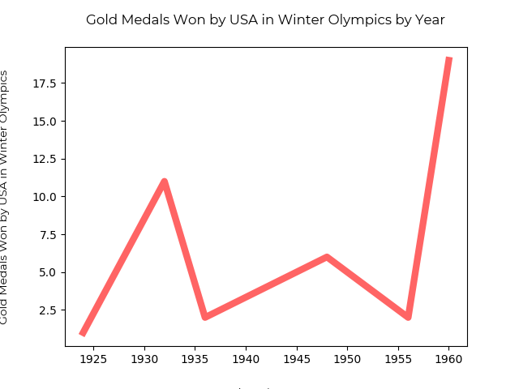
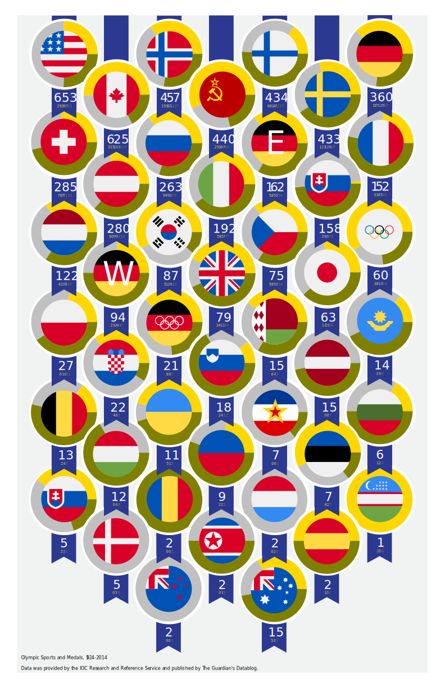

Data Point 1
USA GOLD MEDALS BY YEAR
This chart shows some suspicious activity with the USA olympic team. They are clearly trash for decades, and then all of a sudden they bring 19 golds home in 1960.
What happened bewteen 1955 and 1960? you may ask.

It all makes sense now.
Total Medal Count by Country in Descending Rank
Pie charts show the % of bronze to silver to gold per country
This figure backs up the fact that America is just a bunch of cheaters. There's no way they're better than Canada.
I used matplotlib to do these pie charts, I saved them as SVGs and incorporated them into my final graphic.